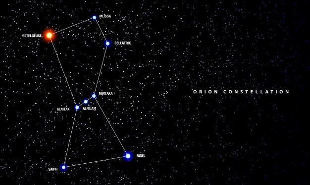

Orion - "The Hunter" Constellation
Click below for:
Science Fiction
Science Fact
Orion Science Fact
Orion is a familiar constellation. The apparent positions of its stars in two dimensions create a well-known pattern on the bowl of planet Earth's night sky. The illustration below reconstructs the relative positions of Orion's bright stars. The most distant star shown is Alnilam. The middle one in the projected line of three that make up Orion's Belt when viewed from planet Earth, Alnilam is nearly 2,000 light-years away, almost 3 times as far as fellow belt stars Alnitak and Mintaka. Though Rigel and Betelgeuse apparently shine brighter in planet Earth's sky, that makes more distant Alnilam intrinsically the brightest of the familiar stars in Orion.
The Stars of Orion
- Alnilam
- Mintaka
- Alnitak
- Rigel
- Betelgeuse
- Meissa
- Saiph
Orion Science Fiction
Orion is also a known race of people in the Star Trek universe and is home to Orion slave girls (see picture below). These women are known to possess a powerful hold overall their male counterparts. The Orion race is know to be the pirates of the galaxy.

Orion Characters in Star Trek
- Vina
- Navaar
- D'Nesh
- Maras
- Harrad-Sar